← 返回阅读库 · 原论文目录
论文讲解阅读文档 · 机器人学 · v099
CURL[2004.04136]
视频时长 00:11:14；讲解文字 4,313 字符；提取讲解画面 42 张。按视频原顺序阅读，每段文字保留时间戳。
文字来自整段视频的自动语音转写，按自然停顿分段，并与 PPT / 论文页面 / 演示画面对齐。未将讲解压缩为摘要；术语、数字和口述公式请结合画面及原论文核对。 阅读稿已校正规范部分明确术语误识别；原始逐字稿和每处修改记录另行保留。
讲解画面为源视频截图（640×360），不是可编辑 PPT 文件。全片按每秒 2 帧扫描内容变化，逐步展开页保留；连续动画保留代表画面。清晰度受源视频限制。
下载完整资料包 · 含离线 HTML、PDF、Word、全部 PPT 画面和字幕。
原论文与材料
CURL: Contrastive Unsupervised Representations for Reinforcement Learning · 下载完整 PDF（20 页）
按时间阅读
00:00:00–00:00:28 · 画面 001
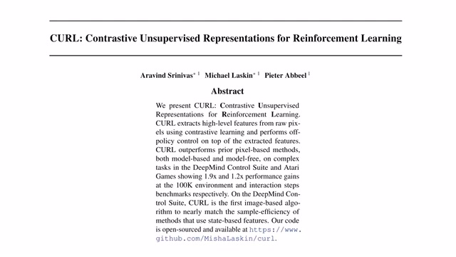
00:00:00–00:00:28 · 画面 001大家好,今天我们来介绍 CURL, Contrastive Unsupervised Representations for Reinforcement Learning。那么这篇文章的主要贡献就像它题目中所说的,它是第一次把 Contrastive Learning 应用到 Reinforcement Learning 当中,也就是说通过对比学习的手段来提供一种好的强的 Feature 或者是 Representations 来使我们的 Reinforcement Learning 更容易取得高分。
那么在这个视频中，我们首先会介绍一下
00:00:28–00:00:29 · 画面 002
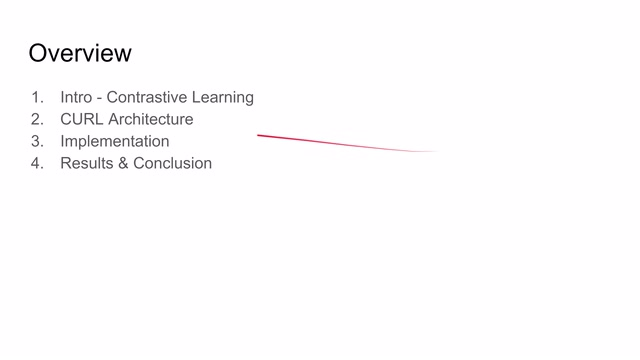
00:00:28–00:00:29 · 画面 00200:00:29–00:00:42 · 画面 003
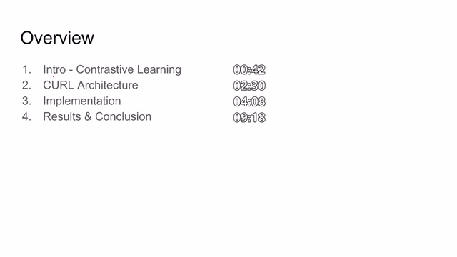
00:00:29–00:00:42 · 画面 003Contrastive Learning 它的主要的思想随后是本文提出的算法的框架以及它的实现细节最后是作者提供的实验结果
00:00:42–00:01:46 · 画面 004
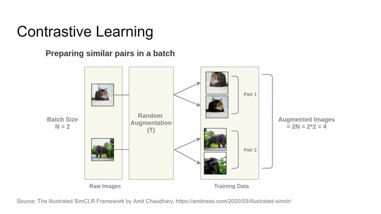
00:00:42–00:01:46 · 画面 004那么对比学习的具体实现是怎么样的呢我们可以看到，当我们给机器输入一张图像之后我们对这张图像进行随机的图像择强比如这里对图像进行了水平翻转这张图像调整了图像的伽马池等等这样子，我们就可以基于这张图像产生两张不同的图像，但是呢它们都来自于同一张图像，所以它们描述的东西都是一只猫猫。那么如果我们有方法能够使计算机意识到，虽然这两张图像它们在数字上，它们在矩阵上是大不相同的，但是呢它们是在描述同一个事情，同一只猫猫。那么下次呢我们如果再有一张猫猫的图像输入进来，那计算机就有可能意识到这张新的猫猫的图像呢是可能跟这些图像都相似的
所以它会把它们自动归为一类，它们都是包毛。同样的，这一张大象的图像经过不同的图像增强的策略，它可以产生不同的图像，但是我们知道这两张图像都是通过这一张大象图像得来的，所以它们应该是描述的同一样东西。这样如果下次有一张其他的大象图像进来，我们就知道这张大象图像也是属于这一类
00:01:46–00:01:47 · 画面 005
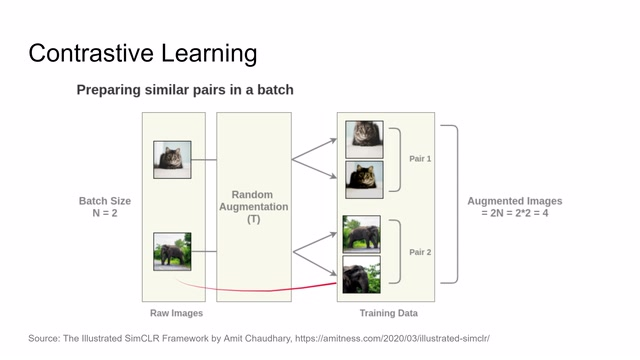
00:01:46–00:01:47 · 画面 00500:01:47–00:02:10 · 画面 006
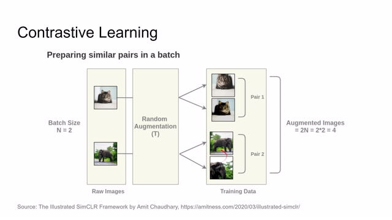
00:01:47–00:02:10 · 画面 006而且与此同时我们为了更好的区别大象和猫猫我们需要一种手段让计算机意识到这两张图像和这两张图像是完全不同的所有的这些图像都是通过不同的图像增强手段在同一张图像产生的这样就巧妙的规避了对图像标记的问题那么这就是整个对比学习的基本原理因此我们只要找到一种 loss 使得这两张图像变得相似这两张图像之间变得相似
00:02:10–00:02:11 · 画面 007
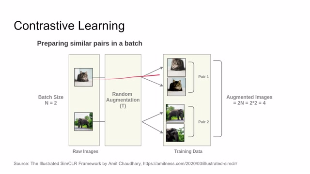
00:02:10–00:02:11 · 画面 00700:02:11–00:02:30 · 画面 008
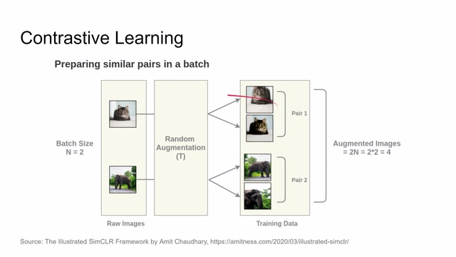
00:02:11–00:02:30 · 画面 008而这两张图像呢，与这两张图像又有所区别。这样子呢，我们就可以进行对比学习了。那么回到我们今天讲的这篇论文，在左侧呢，是我们经典的 DQN 的结构。我们观察到一张图像，把它送到一个卷积神经网络里面，它呢会对每一个 action，每一个动作评估出相应的 Q 值，Qvalue。然后呢我们选择一个最高的 Qvalue 进行执行就可以了。而在本文提出的结构中呢，我们要对图像进行对比学习
00:02:30–00:03:33 · 画面 009
00:02:30–00:03:33 · 画面 009那么当一个图像被输入到网络中的时候，我们对它进行不同的图像增强方法，也就是得到 query 和 key。那么把 query 和 key 呢，分别投入到两个不同的 encoder 里面，就得到它们不同的 representations。然后呢我们就可以构建 contrastive loss。因为我们知道这个 query 和 key 如果它们来自同样的图像呢，我们就希望这两个 representations 尽量的接近而如果他们来自不同的图像呢，我们就希望他们彼此疏远。经过多次训练之后呢，我们就可以得到一个好的 query 的 representation。那么这个 representation 呢，是应该可以相对准确的描述当前图像的状态的。那么当我们把好的 representation 送到 reinforcement learning 这个算法中的时候呢，就可以更快速的得到高分。而且呢，因为这里我们是提供了一个好的 representation
00:03:33–00:03:37 · 画面 010
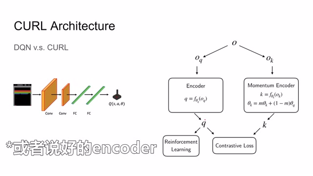
00:03:33–00:03:37 · 画面 01000:03:37–00:03:48 · 画面 011
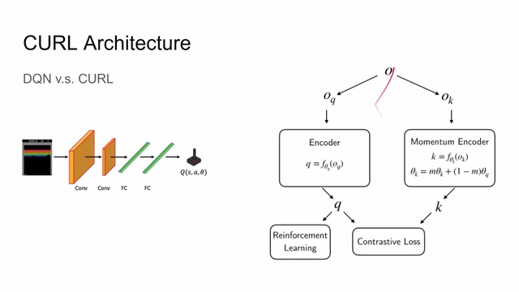
00:03:37–00:03:48 · 画面 01100:03:48–00:03:52 · 画面 012
00:03:48–00:03:52 · 画面 012所以其实这里你可以换用任何你喜欢的 reinforcement learning 的算法。事实上在实际训练过程中,整个这一个大的网络是一同进行训练。然后我们看到这篇文章实现的具体细节。首先我们需要一个 discrimination objective,也就是说我们应该拿什么样的图像来进行对比学习呢?当我们在 replay buffer 中采集出一个 batch 的样本之后,每一个样本都应该代表着系统的不同状态。
00:03:52–00:03:54 · 画面 013
00:03:52–00:03:54 · 画面 01300:03:54–00:03:57 · 画面 014
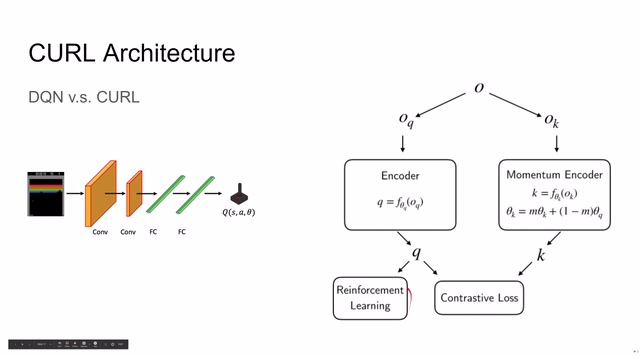
00:03:54–00:03:57 · 画面 01400:03:57–00:04:01 · 画面 015
00:03:57–00:04:01 · 画面 01500:04:01–00:04:03 · 画面 016
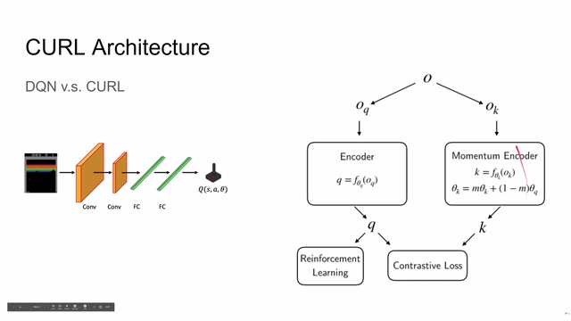
00:04:01–00:04:03 · 画面 01600:04:03–00:04:06 · 画面 017
00:04:03–00:04:06 · 画面 01700:04:06–00:04:57 · 画面 018
00:04:06–00:04:57 · 画面 018那么我们的 encoder 应该使得每一个样本的 representation 尽量的相互远离。这样我们整个的 representation 才能更好的更加全面的描述系统的状态。那么与此同时呢，我们对每一个样本进行数据增强。在本人中的数据增强呢，就是一个非常简单的切片就是原始的输入图像是 100x100 的图像，我们随机的在这个图像中切取一个 84x84 的这么一个切片。来自同一幅图像的两个切片呢，就构成了我们的 query 和 key。因为它们来自同一幅图像，所以它们产生的 representation 应该是相近的。这样子我们的对比学习呢，就知道了既应该把什么样的样本相互靠近，又应该把什么样的样本相互远离
00:04:57–00:04:58 · 画面 019
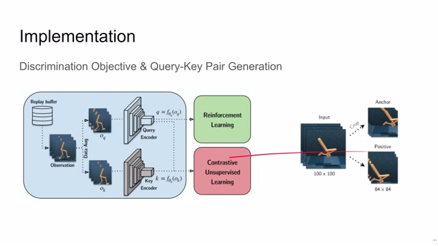
00:04:57–00:04:58 · 画面 01900:04:58–00:05:28 · 画面 020
00:04:58–00:05:28 · 画面 020在这样的一个 loss 的约束下呢，我们就可以训练出一个好的 encoder，能够把相同的系统状态呢归到一起，把不同的系统状态呢相互远离，使得我们增强学习的部分呢变得相对容易起来。那么应该如何描述两个 representation 之间的相似程度呢？这里呢，作者使用了一个简单的矩阵的乘法。我们有一个 matrix 称之为 w，我们使用 w 左右乘上
00:05:28–00:06:37 · 画面 021
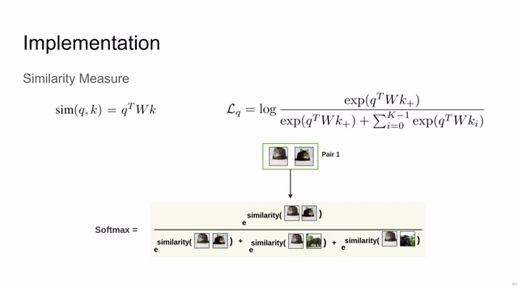
00:05:28–00:06:37 · 画面 021我们的 query 和 key 它们的 representation 这样子我们就可以得到一个值这个值我们定义为 query 和 key 它们的距离或者说它们的 similarity 它们的相似程度那么训练的时候我们假定 kplus 这个样本和 query 是来自于同一张图像而其他的 ki 是来自于不同的图像我们构造一个这样形如 softmax cross entropy 的这么一个 loss 就可以很方便的使得 kplus 和 query 它们两个的相似程度靠近而 query 和其他的 ki 它们的相似程度远离也就像图像这样的两只猫猫它们的相似程度相互靠近而猫猫和其他图像的相似程度相互远离
同时因为我们的 Query 和 Key 都是由学习产生的那么用来恒常距离的这个 W 也是应该由学习产生的那么这样我们就构建出一个 Loss 可以对这个系统进行训练这里作者提供了论文的尾代码让我们一点点来看首先我们构造出两个 Encoder 一个是给 Query 用的一个是给 Key 用的那么这两个 Encoder 它们的结构是完全相同的在一开始我们给它赋予相同的参数
00:06:37–00:08:26 · 画面 022
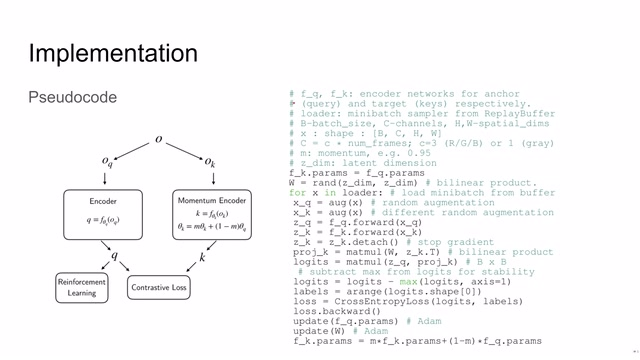
00:06:37–00:08:26 · 画面 022同时我们初始画一个 w 来描述计算两个 vector 之间的距离那么对于我们采集到的每一个样本我们对它进行随机的 data augmentation 将产生的 query 和 key 的图像送到相应的 encoder 里面同时因为我们是只训练 query 的 encoder 所以在这里把像 key 这个 momentum 的 encoder 的 gradient 来切断掉就是停止导数向这个方向传递然后呢在这里我们计算出 key 和 query 之间的距离这也是一个矩阵的计算实际上新浪鱼把一个 batch 中每一个 key 和 query 之间它们相互的距离都计算出来得到一个距离的矩阵随后呢这里减去了最大的这个距离这是从训练的稳定性上来考虑随后呢作者根据 batch set 来生成标签这个标签非常巧妙的
就是每一个 query 应该距离它最近的 key 的 index 也就是说第一个样本的 query 那么离它最近的 key 就应该是第一个 key 那么第二个样本的 query 呢离它最近的 key 就应该是第二个 key 然后我们把这个产生的距离和样本一同送到这个 cross entropy 这个 loss 里面这样就可以很方便的使得第一个样本的 query 和第一个样本的 key 它们相互接近随后我们计算出它的这个 T 路对我们的 Encoder 进行更新同时呢也对我们这个 W 这个距离的计算进行更新最后呢我们对 Momentum Encoder 也就是对 P 的 Encoder 进行更新因为我们这里切断了 T 路的传递所以之前的更新中呢是没有更新过这个 Momentum Encoder 那么这里的 Encoder 为什么叫 Momentum Encoder 呢是因为它并不是直接复制 Slow Encoder 的值
00:08:26–00:08:27 · 画面 023
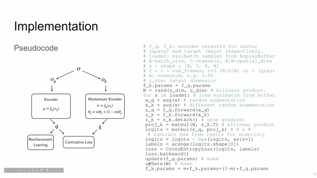
00:08:26–00:08:27 · 画面 02300:08:27–00:08:35 · 画面 024
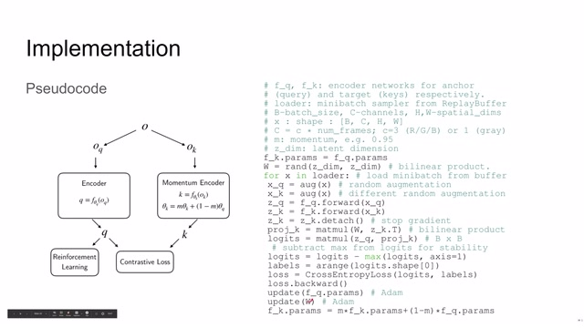
00:08:27–00:08:35 · 画面 02400:08:35–00:08:37 · 画面 025
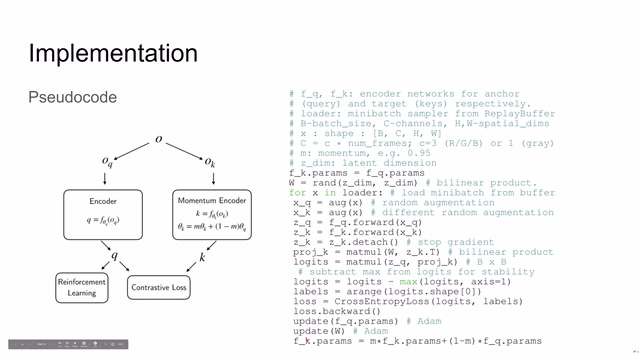
00:08:35–00:08:37 · 画面 02500:08:37–00:08:39 · 画面 026
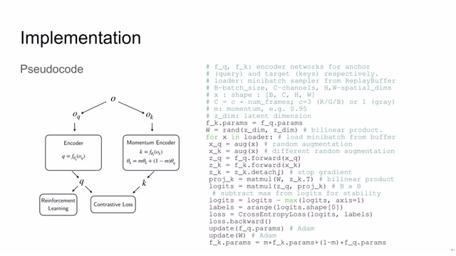
00:08:37–00:08:39 · 画面 02600:08:39–00:08:42 · 画面 027
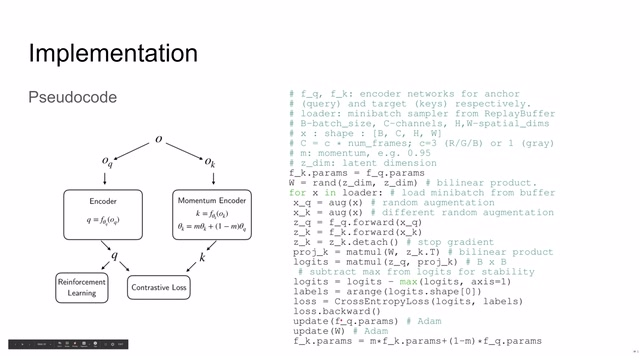
00:08:39–00:08:42 · 画面 02700:08:42–00:08:44 · 画面 028
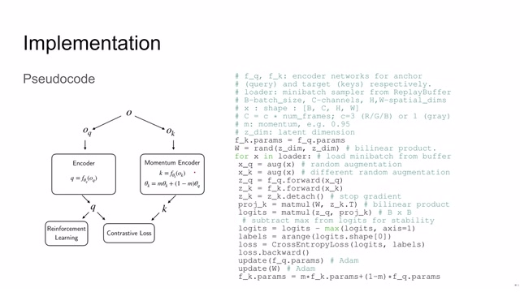
00:08:42–00:08:44 · 画面 02800:08:44–00:08:45 · 画面 029
00:08:44–00:08:45 · 画面 02900:08:45–00:09:13 · 画面 030
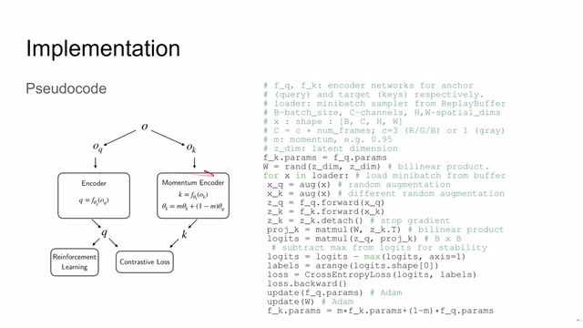
00:08:45–00:09:13 · 画面 030而是逐渐逐渐的向 encoder 靠拢但永远达不到左侧 encoder 的所有的参数那么通过这样设置这个 encoder 使我们的 query 和 key 并不是非常的相近而使我们的网络更加关注于训练 encoder 这样子也在某种程度上避免了整个模型的坍塌那么这就是本文提出的核心的算法框架随后我们来到实验
00:09:13–00:09:16 · 画面 031
00:09:13–00:09:16 · 画面 03100:09:16–00:09:17 · 画面 032
00:09:16–00:09:17 · 画面 03200:09:17–00:09:37 · 画面 033
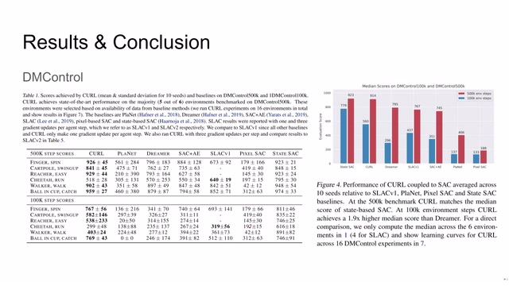
00:09:17–00:09:37 · 画面 033首先作者在 DM Control 也就是 Deep Mind Control 这个任务集上，这里作者使用的是 Soft Actor-Critic 也就是 SAC 搭配上 CURL 来进行所有的实验，我们可以看到它的表现相当于这些 Image Based 的方法上都是非常好的，还有我们走到数人 Dreamer，甚至在某些任务上它的表现可以和直接使用系统状态变量的这些方法相媲美，这个成果可以说是了不起的，特别是我们看到在这种配置下
00:09:37–00:09:38 · 画面 034
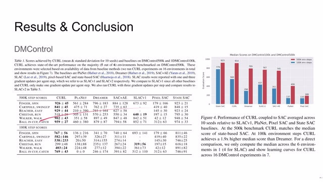
00:09:37–00:09:38 · 画面 03400:09:38–00:10:09 · 画面 035
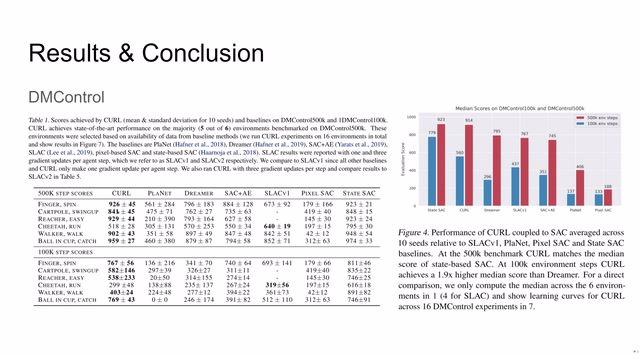
00:09:38–00:10:09 · 画面 035本文提出的方法和直接使用状态变量的方法效果是非常接近的也就是说本文提出的方法呢可以有效的在图像中提取出必要的信息那么作者在附录中也汇报了一些基于我们的 representation 直接求解这个系统状态变量的操作感兴趣的朋友呢可以在附录中查看
00:10:09–00:10:13 · 画面 036
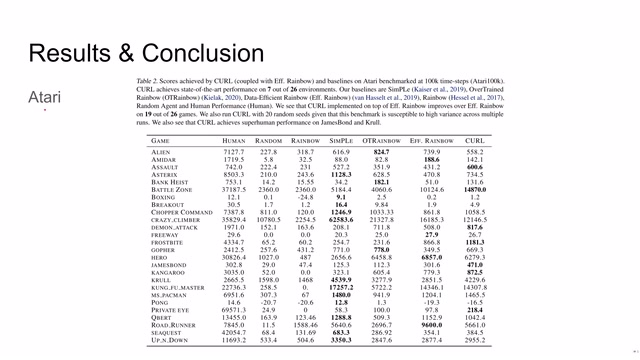
00:10:09–00:10:13 · 画面 036那么同时呢，作者也测试了亚拉利这个环境，在这个环境中，本文的表现并不是特别的突出，当然呢，也是有一些项目呢，能够超过人类玩家的水准，在文章的附录中呢，作者还汇报了一些其他的玻璃实验的结果，等等等等，还是感兴趣的朋友呢，可以在附录中查看
00:10:13–00:10:21 · 画面 037
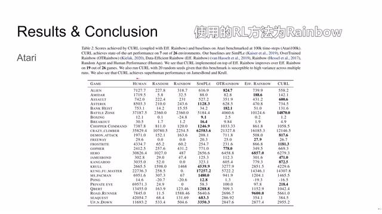
00:10:13–00:10:21 · 画面 03700:10:21–00:10:28 · 画面 038
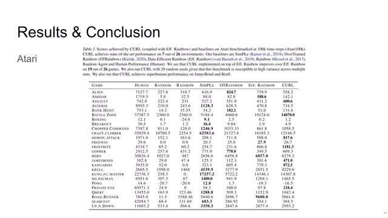
00:10:21–00:10:28 · 画面 03800:10:28–00:10:48 · 画面 039
00:10:28–00:10:48 · 画面 039那么总的来说，本文通过一个相对简单的方法，在增强学习的框架中呢，加入对比学习的元素，通过这种非监督的对比学习呢，使得我们的 encoder 能够更加有效的提取出图像中的系统的信息，方便下游的增强学习的开展，这个思路是非常的新颖，而且在一些数据集上取得了相对不错的成绩，那么虽然呢，在亚拉利这个环境上，它的表现并不是很突出，但是本文的贡献还是值得肯定的
00:10:48–00:10:52 · 画面 040
00:10:48–00:10:52 · 画面 04000:10:52–00:11:13 · 画面 041
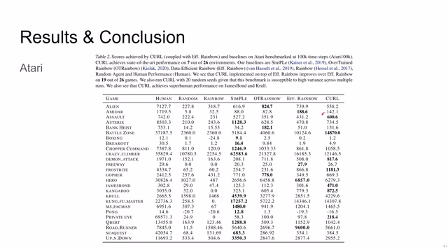
00:10:52–00:11:13 · 画面 041另外，这篇文章的整个的叙述表达，包括实验的构建，其实都是非常直白明确而且专业的，非常建议大家去读一下它的原文，好的，以上就是我对这篇论文的简单的分析，感谢各位的收看，我们下次再见
00:11:13–00:11:14 · 画面 042
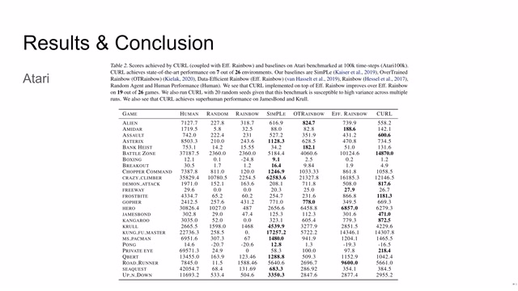
00:11:13–00:11:14 · 画面 042转写与来源说明 · 0 个自动复核提示
保留 37 个原始语音片段，0 个片段触发自动复核提示。提示仅用于定位可能的术语、重复或识别问题，不等于已确认错误。
讲解画面为源视频截图（640×360），不是可编辑 PPT 文件。全片按每秒 2 帧扫描内容变化，逐步展开页保留；连续动画保留代表画面。清晰度受源视频限制。
原视频：paper/合集_2026-10-16_机器人学/[论文简析]CURL[2004.04136].mp4
SHA-256：5866a1af6edcb48ad1fb6291866a7ed3ec655628073c07bdae5e07aae0db1948
全文按视频语音与画面制作。原论文可从上方链接下载；完整资料包保留全文、原始逐字稿、字幕和校对记录。